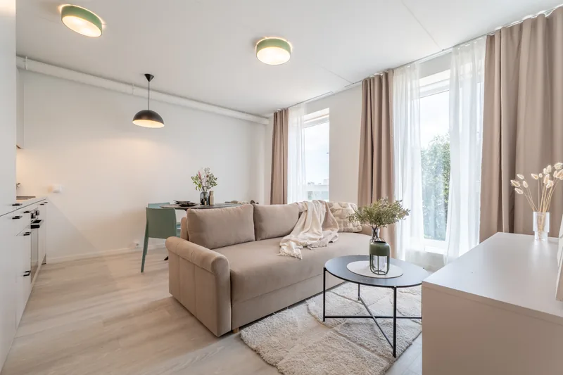

Mitu fotot kuulutusele panna ja mis järjekorras
Lühivastus
Korteri puhul 20–35 fotot, maja puhul 30–50. Iga foto peab vastama ühele küsimusele – kui kaks kaadrit vastavad samale, jäta üks välja. Järjekord käib nii, nagu ostja majja siseneks: väljast sisse ja avalikust privaatsesse.
Portaalid lubavad fotosid palju rohkem, kui neid tegelikult vaadatakse. Ja siin ongi kaks vastandlikku viga: üks müüja paneb üles kuus pilti ja jätab ostja küsimustega üksi, teine paneb kuuskümmend, millest nelikümmend on peaaegu samad.
Kui palju
| Objekt | Fotode arv |
|---|---|
| Stuudio või ühetoaline korter | 18–25 |
| 2–3-toaline korter | 25–35 |
| 4+ toaline korter | 35–45 |
| Väiksem eramaja | 30–40 |
| Suurem eramaja koos krundiga | 40–60 |
| Üüripind | 12–20 |
Need on vahemikud, mitte reeglid. Sisuline mõõdupuu on lihtsam: iga foto peab vastama ühele küsimusele, millele ükski teine foto veel ei vasta. Kui kaks kaadrit vastavad samale küsimusele, jätab tugevam alles ja teine läheb välja.
Küsimused, millele ostja vastust otsib
- Kui suur see ruum on ja mis kujuga?
- Kuidas ruumid omavahel paiknevad?
- Kust tuleb valgus ja mis kell?
- Mis seisus on köök ja vannituba?
- Kus saab asju hoida?
- Mis on aknast näha?
- Milline on maja, trepikoda, sissepääs?
- Kus saab parkida?
- Kuidas köetakse?
Kui su galerii vastab neile üheksale, on sul tõenäoliselt umbes õige arv fotosid. Kui mõni küsimus jääb vastuseta, tuleb see kõne asemel telefonis vastata – ja mitte iga huviline ei viitsi helistada.
Järjekord: nagu ostja majja siseneks
Portaal näitab fotosid selles järjekorras, milles sa nad üles laadid. Kõige loomulikum on järjestada nad nii, nagu inimene kodusse päriselt siseneks – väljast sisse, üldiselt üksikasjani.
- Peafoto. Kodu kõige tugevam kaader. Sellest on eraldi artikkel.
- Peamine eluruum. Elutuba või avatud köök, kaks vaadet erinevatest nurkadest.
- Köök. Köögiliin tervikuna, siis seos söögilauaga.
- Magamistoad. Suurim esimesena.
- Vannituba ja WC.
- Esik, panipaigad, garderoob, pesuruum.
- Rõdu või terrass ja vaade.
- Maja, trepikoda, õu, parkimine. Maja puhul on välisfotod muidugi juba ees.
- Tehniline pool ja detailid. Küte, ventilatsioon, materjalid.
- Korruseplaan. Kõige lõppu või kohe peafoto järele – mõlemad töötavad.

Mis välja jätta
- Peaaegu samad kaadrid. Kaks sammu paremale nihutatud vaade ei ole uus foto.
- Detailid, mis ei müü. Pistikupesa, uksekäepide, radiaator.
- Tumedad ja udused kaadrid. Üks nõrk foto galeriis mõjub rohkem, kui kaks head parandavad.
- Naabrite aknad ja autonumbrid. Viisakuse ja privaatsuse pärast.
- Sama ruum eri aastaaegadel. Segane ja tundub, et objekt on kaua müügis olnud.
Ära peida puudusi välja jätmisega. Kui ühest ruumist ei ole ühtegi fotot, eeldab ostja halvimat – ja tal on tavaliselt õigus. Parem on näidata tagasihoidlikku ruumi ausalt kui jätta auk galeriisse.
Uuenda galeriid, kui objekt seisab
Kui kuulutus on olnud üleval kuu või rohkem ja huvi on vaibunud, on peafoto vahetamine kõige odavam katse, mille saab teha. Portaalides tõstab kuulutuse muutmine selle sageli ka otsingutulemustes uuesti üles.
Sama kehtib aastaaja kohta: talvel tehtud välisfoto vananeb kevadel kiiresti. Kui objekt on müügis üle poole aasta, tasub üks värske väliskaader ära teha.
Meie pakettides on korteri puhul 25–45 ja eramaja puhul 30–55 fotot – täpselt nii palju, et ükski küsimus vastuseta ei jääks. Pildid käes 48 tunniga.
Vaata hindu